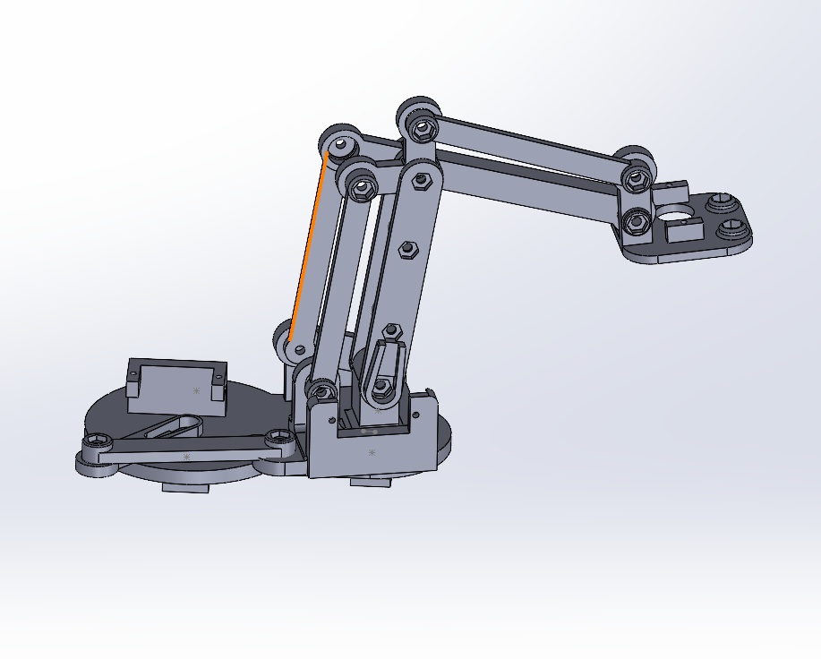

Inverse Kinematics Robotic Arm
The Project
I’ve always been fascinated with motion, and when I learned about Inverse Kinematics (I.K.), my mind was blown. The process of defining an endpoint, determining the angles needed, and then the motor locations required to move an end effector was so cool to me. With this project, I built a simple 3D-printed robotic arm to experiment with I.K. and learn more about how it works. Throughout the project, I mostly followed a YouTube video by RoTechnic and carefully replicated most of the steps to understand the process better.
The Proposal
The idea was simple: make a 3-axis arm with equal lengths on each segment so that the calculations were straightforward and control it with Arduino. I designed the body in SOLIDWORKS using a similar design I found on YouTube as a reference, making only minor changes.
The Process
Assembling the arm was fairly simple. I used ball bearings to make the 3D-printed joints move more freely around the M3 bolts.  Wiring the motors to the Arduino was simple enough; the real challenge with this project was the logic. The code (seen below) implements a series of equations and relations to determine the angles of each arm to achieve inverse kinematics.
Wiring the motors to the Arduino was simple enough; the real challenge with this project was the logic. The code (seen below) implements a series of equations and relations to determine the angles of each arm to achieve inverse kinematics.
[IK Code].
#include
#include
#include
#define BASESERVOPIN A0
#define ARM1SERVOPIN A1
#define ARM2SERVOPIN A2
#define GRIPSERVOPIN A3
#define GRIPBUTTONPIN 4
#define BASEBUTTONPIN 7
#define ARM1BUTTONPIN 8
#define ARM2BUTTONPIN 9
// BAse 80-120
// arm1 68-160
// arm2 15-96
// gripper 0-180
//ZERO POINT at (75,0,75)
//b 100
//a1 118
//a2 70
// g ?
Encoder myEnc(A4, A5);
Servo arm1servo;
Servo arm2servo;
Servo baseservo;
Servo gripservo;
double x=75;
double y=0;
double z=75;
int gripAngle=67;
int angleToMicroseconds(double angle) {
double val = 460.0 + (((2400.0 - 460.0) / 180.0) * angle);
return (int)val;
}
void moveToAngle(double b, double a1, double a2) {
// Check if the input values are within the specified ranges
if (b < 80 || b > 120 || a1 < 68 || a1 > 160 || a2 < 15 || a2 > 96 ) {
Serial.println("Error: One or more input values are out of range.");
return; // Exit the function if any value is out of range
}
// Proceed with setting the servo positions only if all values are valid
baseservo.writeMicroseconds(angleToMicroseconds(b));
arm1servo.writeMicroseconds(angleToMicroseconds(a1));
arm2servo.writeMicroseconds(angleToMicroseconds(a2));
// Print the values for debugging
Serial.println("base: ");
Serial.println(b);
Serial.println("arm1: ");
Serial.println(a1);
Serial.println("arm2: ");
Serial.println(a2);
}
void moveToPos(double x, double y, double z) {
// Calculate the base angle
double b = atan2(y, x) * (180 / 3.1415); // base angle
// Calculate the extension in the x and y directions
double l = sqrt(x * x + y * y); // x and y extension
// Calculate the hypotenuse length
double h = sqrt(l * l + z * z);
// Calculate the angle phi
double phi = atan(z / l) * (180 / 3.1415);
// Calculate the angle theta
double theta = acos((h / 2) / 75) * (180 / 3.1415);
// Calculate angles for the arm segments
double a1 = phi + theta; // angle for first part of the arm
double a2 = phi - theta; // angle for second part of the arm
// Print the calculated values
Serial.print("base: ");
Serial.println(b);
Serial.print("arm1: ");
Serial.println(a1);
Serial.print("arm2: ");
Serial.println(a2);
// Uncomment the following line if you have a function to move the arm
moveToAngle(b+100, a1+28, a2+70);
}
void setup() {
// put your setup code here, to run once:
baseservo.attach(BASESERVOPIN,440 ,2400);
arm1servo.attach(ARM1SERVOPIN,440 ,2400);
arm2servo.attach(ARM2SERVOPIN,440 ,2400);
gripservo.attach(GRIPSERVOPIN,440 ,2400);
baseservo.writeMicroseconds(angleToMicroseconds(100));
arm1servo.writeMicroseconds(angleToMicroseconds(118));
arm2servo.writeMicroseconds(angleToMicroseconds(70));
gripservo.writeMicroseconds(angleToMicroseconds(50));
pinMode(BASEBUTTONPIN,INPUT);
pinMode(ARM1BUTTONPIN,INPUT);
pinMode(ARM2BUTTONPIN,INPUT);
pinMode(GRIPBUTTONPIN,INPUT);
Serial.begin(9600);
}
long oldPosition=0;
void loop() {
int amount=0;
long newPosition = myEnc.read();
if (newPosition != oldPosition) {
amount=newPosition-oldPosition;
//Serial.println(amount);
oldPosition = newPosition;
}
if (digitalRead(BASEBUTTONPIN) == HIGH && amount!=0) {
Serial.println(amount);
x+=amount*5;
Serial.println(x);
moveToPos(x,y,z);
}
if (digitalRead(ARM1BUTTONPIN) == HIGH && amount!=0) {
Serial.println(amount);
y+=amount*5;
Serial.println(y);
moveToPos(x,y,z);
}
if (digitalRead(ARM2BUTTONPIN) == HIGH && amount!=0) {
Serial.println(amount);
z+=amount*5;
Serial.println(z);
moveToPos(x,y,z);
}
if (digitalRead(GRIPBUTTONPIN) == HIGH && digitalRead(BASEBUTTONPIN) == LOW
&& digitalRead(ARM1BUTTONPIN) == LOW && digitalRead(ARM2BUTTONPIN) == LOW && amount!=0) {
gripAngle+=amount*5;
gripservo.writeMicroseconds(angleToMicroseconds(gripAngle));
}
}
The Product
The final result is a bit jittery due to the inexpensive servos and the lack of interpolation in the motors' movement. It uses an rotary emcory and 4 buttons to select the correct axis (or gripper) and move to that location. Im very pleased with how it turned out and its a lot of fun to controll.
The Possible
 If I were to do this project again, I would focus more on smoothing out the motor control with ramping speed and change the input method, as swapping axes with buttons and the rotary encoder was not the smoothest experience. Overall, I learned a lot from this project and hope to work on something similar in the future, creating most of the code and math myself instead of relying on a reference video to solidify my understanding of the topic.
If I were to do this project again, I would focus more on smoothing out the motor control with ramping speed and change the input method, as swapping axes with buttons and the rotary encoder was not the smoothest experience. Overall, I learned a lot from this project and hope to work on something similar in the future, creating most of the code and math myself instead of relying on a reference video to solidify my understanding of the topic.